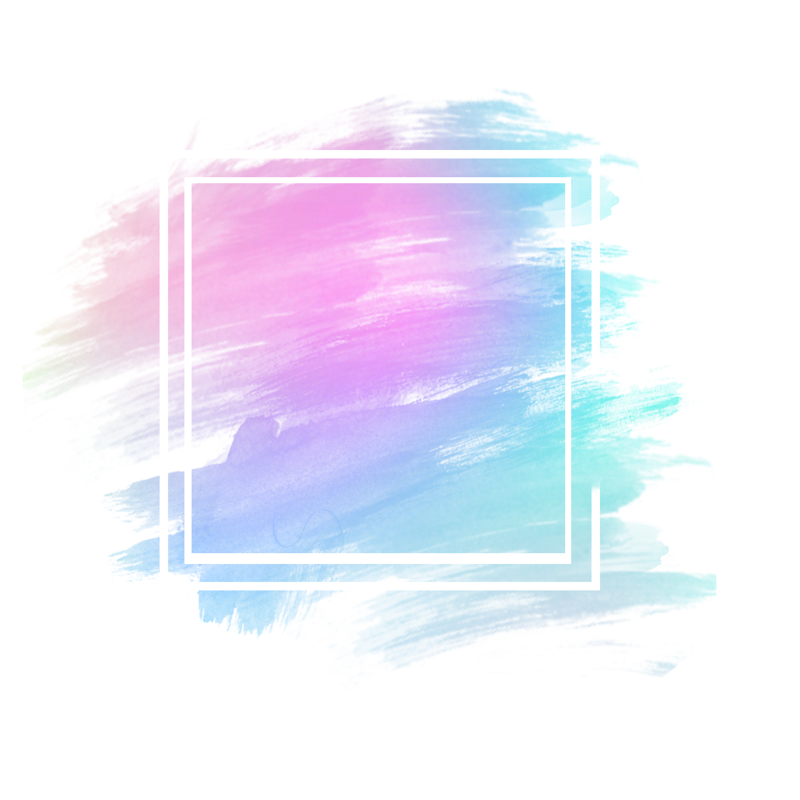

Nataliia Ostrovska
Manual QA Engineer

I am flexible, reliable, conscious, open to new experience. I´d like to be QA Specialist and I´m ready to use every opportunity for growth
Lesya Ukrainka Volyn National University. Psychology Teacher, Educational Psychology · (September 1999 - July 2004)
Kovel branch of Lutsk Basic Medical College (Diploma of honour). Paramedic. Specialty Medicine (September 1996 – March 1999)
Certificate "Fundamentals of the software Testing" (QATestLab)
The Complete 2022 Software Testing Bootcamp (Udemy).
Build Responsive Real World Websites with HTML5 and CSS3 (Udemy).
Vue JS 2 - The Complete Guide (incl. Vue Router & Vuex) (Udemy).
The Complete WordPress Website Business Course (Udemy).
The Complete JavaScript Course 2018: Build Real Projects! (Udemy).
Ukrainian (native language)
Russian (native language)
English: A2-B1